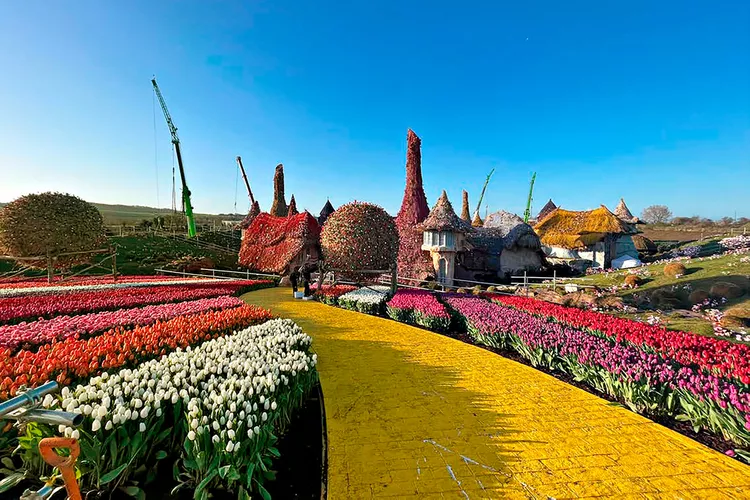

Munchkinland is the eastern quadrant of Oz, and home to the Munchkinlanders; The province is also the native home of Elphaba, the Wicked Witch of the West, and her younger sister Nessarose, and although they both grew up in Quadling Country, Nessarose eventually comes to power in Munchkinland, but her corrupt rule earns her loathing and the name, "Wicked Witch of the East".